OTIUM — практика нарочитого досуга. В античном смысле otium — не побег от работы, а время, когда внимание возвращается к памяти, пейзажу и мысли — без прикладного дедлайна.
Мы выстраиваем маршруты для неспешного присутствия, а не для чек-листа достопримечательностей: важно быть в месте, а не «потреблять» виды.
OTIUM — не туроператор. Это приглашение пройтись, остановиться и оставить маршрут незавершённым, если свет на фасаде заслуживает ещё минуты.
Исторические и справочные гербы
Amsterdam
Путеводитель. Объектов в этом выпуске: 31.
Историческая справка
Амстердам — столица Нидерландов и крупнейший город королевства, исторический центр торговли и мореплавания.
С XIII века город развивается на месте дамб у залива; Золотой век XVII века принёс расцвет архитектуры, каналов и светского искусства. Сегодня Амстердам сочетает исторические кварталы с современной урбанистикой и музеями мирового уровня.
В XIX–XX веках порт и колониальная торговля обогатили город; после Второй мировой войны Амстердам выбрал гуманную урбанистику и стал образцом интеграции воды, велосипеда и культурных институций. Сегодня это столица международного права, дизайна и устойчивого развития.
Маршруты
Один день
Компактный маршрут по главным точкам путеводителя с минимальным возвратом назад пешком.
Высота башни составляет около 75 метров. Структура выполнена из стекла и стали, имеет характерную форму, напоминающую перевернутый корабль. На верхнем этаже расположена смотровая площадка с потрясающим видом на каналы и исторический центр Амстердама. Внутри здания находятся кафе, рестораны и магазины.
А'DAM Tower — символ Амстердама и одна из главных достопримечательностей города, расположенная рядом с каналом Сингел. Здание было построено в стиле хай-тек в конце XX века архитектором Ремом Колхасом и открыто в 1996 году. А'DAM изначально задумывался как культурный центр, объединяющий театры, концертные залы, галереи и офисы. Здание привлекает туристов своей необычной формой и панорамными видами на город, является популярным местом встреч и проведения мероприятий.
Amsterdam Central Station
Это одна из старейших железнодорожных станций Нидерландов. Архитектурный стиль станции сочетает черты голландской готики и итальянского ренессанса. На территории станции расположен музей железнодорожной техники. Ежедневно через станцию проходит около 400 поездов. Здание украшено мозаичными панелями, витражами и декоративными элементами.
Станция Амстердам-Центраал была построена в 1881–1889 годах архитектором Питером Кюйперсом в стиле нидерландского неоренессанса. Это крупнейшая железнодорожная станция Нидерландов, расположенная в самом центре города на площади Стансплейн. Она стала символом Амстердама благодаря уникальной архитектуре и великолепному интерьеру, сочетающему элементы готики и ренессанса. Амстердам-Центраал привлекает туристов своей исторической ценностью и архитектурной красотой, являясь важным транспортным узлом страны.
Amsterdam Anne Frank House
Стиль: Канальный дом (каналхаус)
Дом Анны Франк является одним из наиболее посещаемых музеев Амстердама. Тайная комната, где прятались члены семьи Франк, до сих пор сохранила оригинальную обстановку времен Второй мировой войны. Ежегодно музей посещают около миллиона туристов со всего мира. После освобождения Нидерландов в 1945 году дом Анны Франк был передан Нидерландскому обществу памяти Холокоста. Музей открыт ежедневно, кроме Рождества и Нового года.
Знаменитый дом Анны Франк расположен на канале Западной Маркета в Амстердаме и изначально был обычной городской резиденцией XVII века. В годы Второй мировой войны здесь была оборудована тайная комната, где семья Анны Франк скрывалась от нацистских преследований. Дом стал символом борьбы за свободу и память жертв Холокоста. Посещение дома Анны Франк позволяет глубже понять трагические события Второй мировой войны и историю Холокоста, а также почувствовать атмосферу жизни семьи во время оккупации Нидерландов.
Amsterdam Artis
Период: 1838
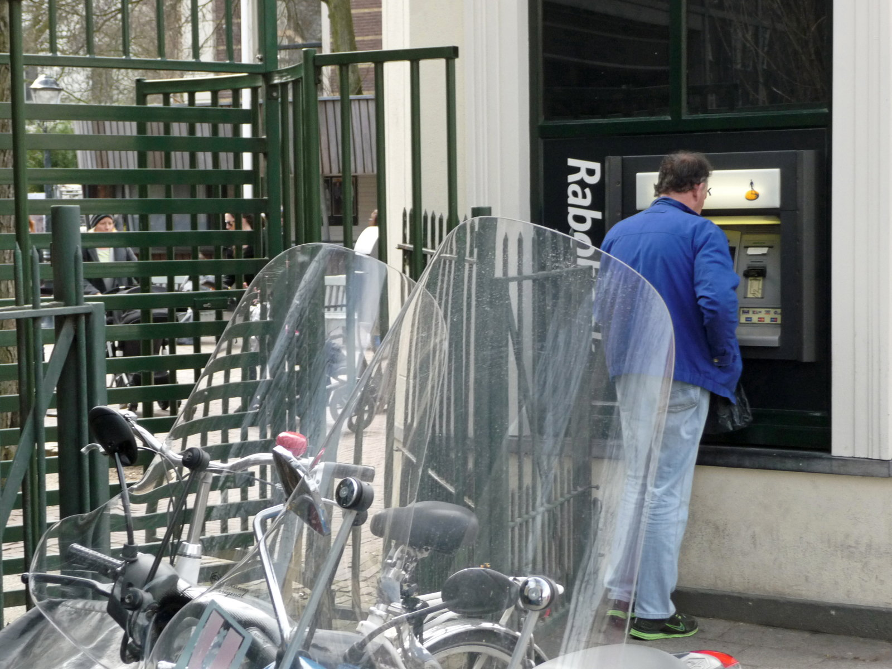
Основан в 1838 году. Один из старейших зоопарков Европы. Расположен в центре Амстердама, недалеко от Королевского дворца. Имеет собственный ботанический сад и аквариум. Ежегодно принимает более миллиона посетителей.
Artis Zoo основана в 1838 году и является старейшей зоопарковой территорией Нидерландов. Изначально зоопарк задумывался как место для научных исследований и популяризации знаний о природе среди широкой публики. Сегодня Artis представляет собой комплекс, включающий зоопарк, ботанический сад и аквариум, где представлены редкие виды животных и растений. Зоопарк привлекает туристов и местных жителей благодаря уникальной коллекции экзотических видов и возможности познакомиться с редкими животными в естественной среде обитания.
Amsterdam Begijnhof
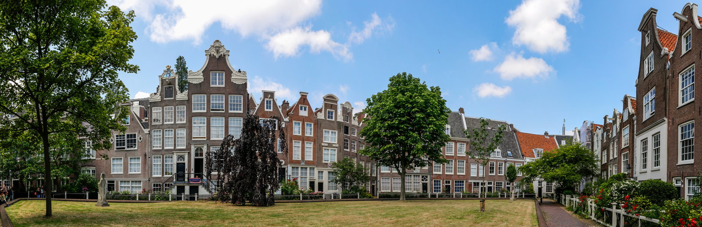
Здесь расположены дома XVII века, сохранившиеся до наших дней. На территории Бегиньхофа находится старейшая действующая церковь Амстердама — Оude Kerk. Считается одним из наиболее тихих и умиротворяющих уголков города. В Бегиньхофе проводятся экскурсии, позволяющие познакомиться с историей женских религиозных общин. Монастырь был основан в XVI веке.
Бегиньхоф — женский монастырь, основанный в XVI веке бегиннями, религиозными общинами незамужних женщин. Здесь сохранилось несколько старинных домов XVII века, окружённых зелёной территорией. Бегиньхоф знаменит своей атмосферой спокойствия и тишины среди шумного Амстердама. Это одно из немногих мест в городе, где можно почувствовать атмосферу средневекового женского монастыря.
Bijlmer
Стиль: хай-тек | Период: 1968–1974
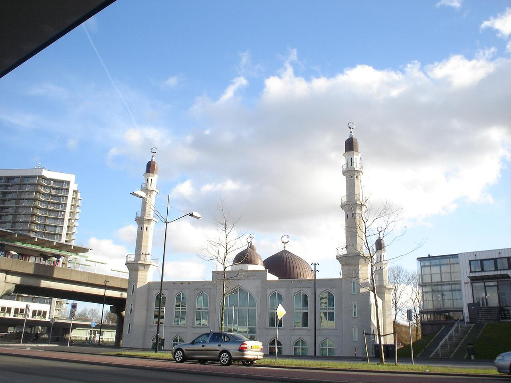
Высота башни составляет около 84 метров, она является одним из самых высоких зданий района. Архитектором проекта выступил известный нидерландский мастер архитектуры Рем Колхас, который также проектировал музей Вигмор в Лондоне. Структура здания выполнена из стекла и стали, имеет сложную форму с плавными изгибами и углами. На верхнем этаже расположена смотровая площадка, откуда открывается панорамный вид на город. Здание изначально предназначалось для размещения офисов и жилья.
Башня Bijlmer.JPG — культовое сооружение района Бийлмер в Амстердаме, построенная в конце XX века. Изначально задумывалась как современное здание с элементами хай-тек архитектуры, отражающее стремительное развитие города и стремление жителей к прогрессу. Сооружение стало символом инноваций и современного искусства в архитектуре Нидерландов. Здание привлекает туристов необычной формой и смелостью архитектурного решения, став одной из визитных карточек района Бийлмер.
Зона Canal ring walk включает несколько каналов: Сингельграхт, Херенграхт, Кейзерсграхт и Принсенграхт. Архитектура домов выполнена в стиле голландского амстердамского ренессанса и барокко. На территории канала-кольца расположены знаменитые музеи и достопримечательности, такие как Рейксмузеум и Королевский дворец. По каналам регулярно проходят прогулочные катера и лодки, создавая атмосферу спокойствия и романтики. Ежегодно здесь проводятся фестивали и праздники, привлекающие туристов и местных жителей.
Канал-кольцо Амстердама — историческая пешеходная зона, окружённая каналами и живописными домами эпохи XVII века. Это сердце города, где сохранились уникальные голландские дома с характерной двускатной крышей. Канал-кольцо было построено в основном в XVII веке и стало символом процветания и величия Амстердама того периода. Здесь можно увидеть типичные голландские каналы и уютные жилые дома, отражающие дух старинного Амстердама.
Amsterdam Dam Square
Центральная площадь, связывающая торговые улицы, королевский дворец и национальный мемориал жертвам Второй мировой войны. Голуби и уличные артисты скапливаются возле памятника. Трамваи пересекают площадь — обращайте внимание на велосипедные дорожки по краям.
Здесь был построен затор на Амстеле; площадь превратилась в центральное место сбора города. Символическое сердце Амстердама, место проведения протестов и мероприятий.
Amsterdam De Gooyer
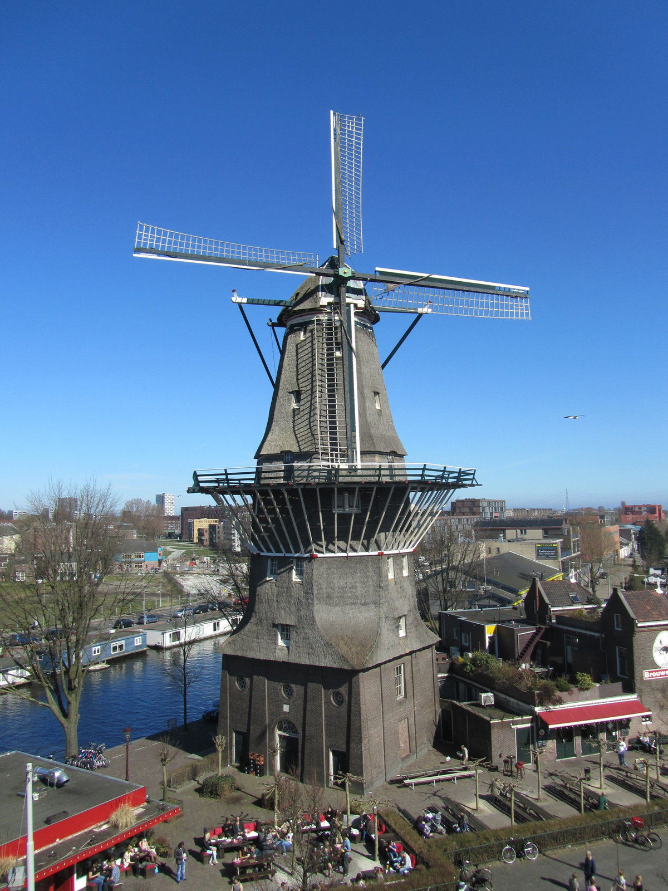
Построена в середине XVII века. Использовалась для переработки зерна и льна. Одна из немногих сохранившихся исторических мельниц Амстердама. Находится рядом с каналом Принсенграхт. Является популярным местом для прогулок и фотосессий.
ветряная мельница Де Гойер расположена в Амстердаме и является одной из старейших сохранившихся мельниц города. Построена она была в XVII веке и использовалась для размола зерна и переработки льна. Это одна из немногих сохранившихся исторических мельниц Амстердама, свидетельствующих о былом значении сельского хозяйства в городской жизни. Мельница Де Гойер привлекает туристов своей историей и атмосферой старинной Голландии, позволяя заглянуть в прошлое и увидеть, каким образом город развивался и менялся.
Amsterdam Eye Film
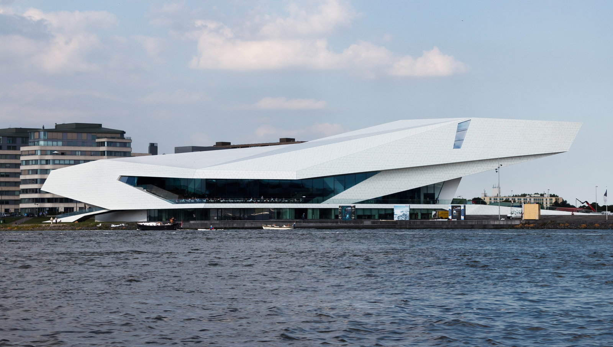
Основан в 2003 году объединением трех ранее независимых организаций. Расположен в историческом здании бывшего кинотеатра Royal Noordeinde Palace. Ежегодно проводит около 400 мероприятий, включая премьеры, ретроспективы и фестивали. Собирает коллекцию редких архивных материалов и киноплёнок. Является членом международной сети Cinemateket.
EYE Film Institute — музей киноискусства в Амстердаме, основанный в 2003 году. Музей посвящён исследованию и популяризации мирового кинематографического наследия. EYE организует выставки, показы фильмов, лекции и мастер-классы, привлекая внимание широкой аудитории к истории кино и современным тенденциям. Это один из ведущих мировых центров изучения кино, предлагающий посетителям уникальные возможности познакомиться с историей кинематографа и современными фильмами.
Amsterdam Foam
Стиль: Исторический стиль здания — промышленная архитектура начала XX века.
Foam является одним из ведущих музеев фотографии в Европе и ежегодно проводит выставки известных мировых фотографов. Здание музея, бывшее здание электростанции, внесено в список памятников архитектуры Нидерландов. Коллекция музея включает работы мастеров фотографии, таких как Андреас Гурски, Синди Шерман и Джефф Уолл. Ежегодно музей организует международные конкурсы и фотофестивали, привлекающие внимание широкой аудитории. Foam располагает обширной библиотекой фотографий и архивом исторических снимков.
Музей фотографии Foam открылся в Амстердаме в 2004 году и стал важным культурным центром Европы благодаря своей коллекции современного фотоискусства. Музей расположен в историческом здании бывшей электростанции, построенной в начале XX века, что придает экспозиции особый шарм и атмосферу. Foam привлекает любителей и профессионалов фотографии возможностью увидеть передовые работы современных фотографов и узнать о последних тенденциях в мире фотоискусства.
Amsterdam Hermitage Amsterdam
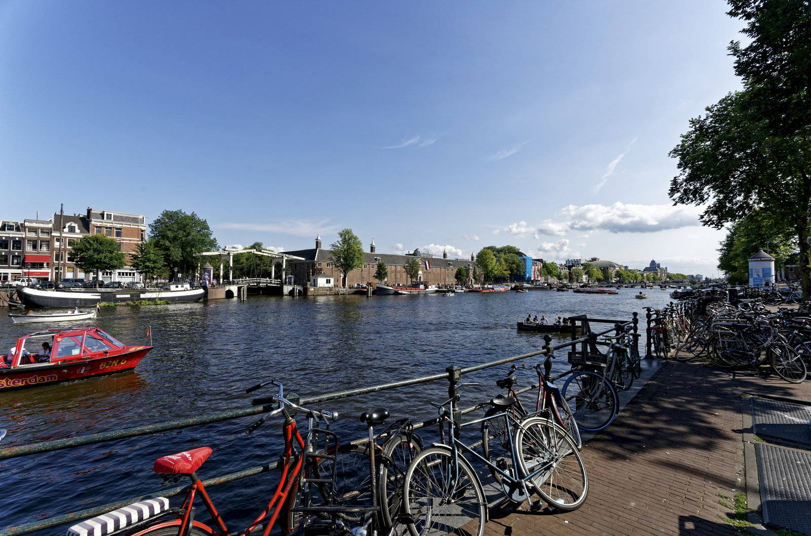
Это первая зарубежная галерея Государственного Эрмитажа. Расположена в бывшем складе Royal Dutch Shell. Создана известным голландским архитектором Ремко ван дер Хелмом. Открытие состоялось в апреле 2019 года. Коллекция включает произведения живописи, графики и скульптуры.
Героиня нашего рассказа — галерея Hermitage Amsterdam, открытая в 2019 году. Она стала первой филией Государственного Эрмитажа за пределами России и Европы. Галерея расположена в историческом здании бывшего склада XIX века, принадлежавшего компании Royal Dutch Shell. Проект разработан голландским архитектором Ремко ван дер Хелмом. Галерея позволяет российским шедеврам искусства обрести новую аудиторию в Европе, расширяя культурное наследие страны.
Amsterdam Magere Brug
Стиль: ренессанс | Период: 1980
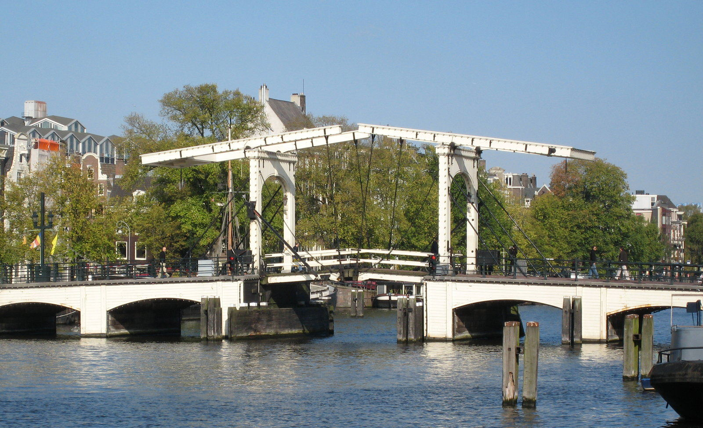
Построена в стиле ренессансной архитектуры, характерной для Нидерландов. Имеет длину около 80 метров и ширину чуть больше двух метров. На протяжении веков использовалась жителями Амстердама для прогулок и пикников. Название 'Magere' переводится с голландского как 'худая', из-за тонкой конструкции моста. Является символом Амстердама наряду с каналами и велосипедистами.
Мейзе-Брюг — одна из старейших деревянных пешеходных мостовых Амстердама, построенная в XVI веке. Со временем она несколько раз перестраивалась и ремонтировалась, последняя реконструкция состоялась в конце XX века. Известна своей необычной формой и элегантностью. Популярное туристическое место благодаря живописному виду и близости к историческим районам города.
Amsterdam Museum Het Schip
Стиль: модерн, функционализм | Период: 1870–1914
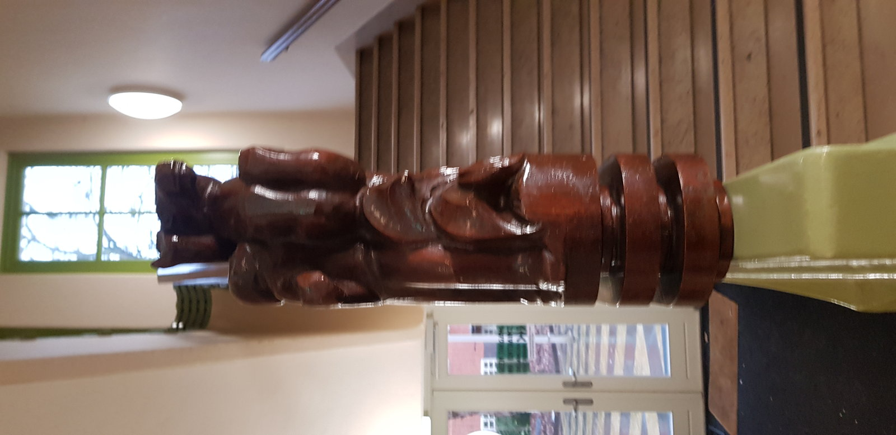
Здание музея имеет форму корабля, символизируя движение вперед и прогресс. Архитектор Хендрик Питер Берлаге использовал новые строительные технологии и материалы, такие как железобетон и стекло. «Het Schip» стал первым зданием в Амстердаме, построенным исключительно в стиле модерн. Интерьер музея оформлен в духе функционализма и минимализма, характерных для голландского рационализма. Музей открыт для публики с 1986 года.
Музей «Het Schip» («Корабль») расположен в Амстердаме и является выдающимся примером архитектуры XX века. Построенный в 1924–1931 годах архитектором Хендриком Питером Берлаге, музей представляет собой здание необычной формы, вдохновленное формой корабля. Архитектор стремился создать пространство, отражающее дух времени и инновационные идеи своего времени. Этот музей интересен своими архитектурными решениями и уникальной формой здания, ставшей символом модернизма в Нидерландах.
Amsterdam Scheepvaartmuseum
Стиль: арт-деко | Период: 1937
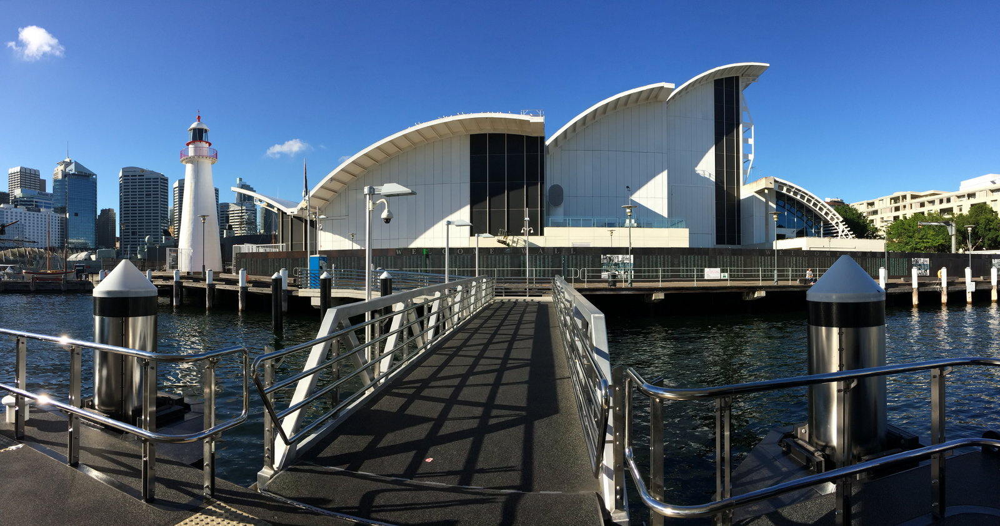
Коллекция музея включает более 40 тысяч предметов, охватывающих историю морского дела от Средневековья до современности. Экспозиция рассказывает о роли Нидерландов в развитии мировой торговли и исследовании новых земель. Здание музея построено в стиле арт-деко и открыто для посетителей с 1937 года. Среди наиболее известных экспонатов — модель корабля «Де Зёйд-Вестерлинден», построенного в XVII веке. Ежегодно музей посещает около полумиллиона человек.
Национальный морской музей Нидерландов расположен в Амстердаме и является крупнейшим морским музеем страны. Основан в 1935 году, изначально назывался Морской институт Нидерландов. В музее собрана обширная коллекция экспонатов, посвящённых истории голландского флота и морских исследований. Среди знаковых объектов музея — старинные модели кораблей, навигационные инструменты и артефакты, связанные с великими географическими открытиями. Музей привлекает туристов и исследователей своей уникальной коллекцией, отражающей вклад Нидерландов в мировое мореплавание и колониальную экспансию.
Монумент выполнен архитектором Питером Айзенманом, известным своими мемориальными проектами. Открытие памятника совпало с 60-й годовщиной высадки союзников в Нормандии. На территории мемориала ежегодно проходят памятные мероприятия. Скульптурная композиция состоит из трёх бетонных блоков, расположенных в виде буквы V. Рядом с монументом находится музей Берген-Бельзена.
Национальный монумент Нидерландов был открыт в 2002 году после десятилетней реконструкции и торжественного перезахоронения останков солдат времён Второй мировой войны. Памятник расположен рядом с бывшим концентрационным лагерем Берген-Бельзен и является символом памяти жертв нацизма и героизма голландского народа. Монумент представляет собой абстрактную конструкцию из бетона, символизирующую сломанные цепи угнетения. Национальный монумент — место памяти и скорби, посвящённое жертвам Холокоста и всем погибшим во время Второй мировой войны.
Amsterdam Nemo
Здание музея выполнено в форме большого купола, покрытого медью, благодаря чему оно блестит на солнце и выглядит эффектно издалека. Архитектор Ренцо Пьяно вдохновлялся идеей соединения науки и искусства, создав уникальный архитектурный объект. На территории музея регулярно проводятся научные шоу, лекции и мастер-классы, привлекающие внимание широкой аудитории. Экспозиция музея включает интерактивные экспонаты, демонстрирующие физические явления и законы природы. Ежегодно музей посещают сотни тысяч посетителей, интересующихся наукой и технологиями.
Научный музей NEMO открылся в 1997 году по проекту знаменитого итальянского архитектора Ренцо Пьяно. Расположенный на искусственном острове посреди Остердока, музей стал первым современным научно-техническим центром Нидерландов. Архитектура здания выделяется необычной формой купола из медной оболочки, который напоминает гигантский космический корабль или летающую тарелку. Музей привлекает туристов и местных жителей возможностью познакомиться с передовыми научными достижениями и интерактивными экспозициями, посвященными физике, биологии, астрономии и другим естественным наукам.
Amsterdam Nieuwe Kerk
Стиль: барокко | Период: 1306–1404
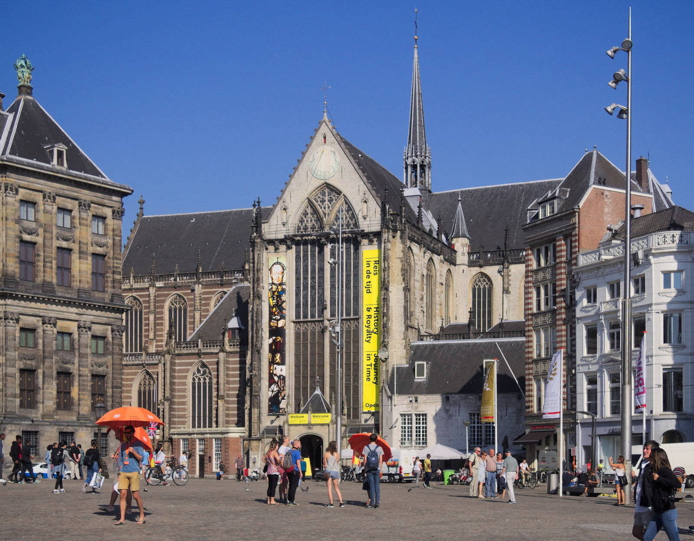
Строительство церкви велось с 1650 по 1665 год. Архитектором здания был Питер Пост, известный мастер своего времени. Интерьер церкви украшен произведениями искусства известных мастеров Голландии XVII века. Здесь находятся могилы многих знаменитых людей, включая представителей династии Оранских-Нассау. С момента постройки здание использовалось также как музей и выставочный зал.
Нидерландская Новая церковь, расположенная в центре Амстердама, была построена в XVII веке и долгое время служила местом захоронений членов королевской семьи и знати Нидерландов. Со временем она стала важным культурным объектом города, сохранившимся памятником архитектуры эпохи барокко. Здание привлекает туристов своей уникальной архитектурой и богатой историей, связанной с выдающимися фигурами голландского общества.
Amsterdam Noorderkerk
Стиль: голландское барокко | Период: 1648–1650
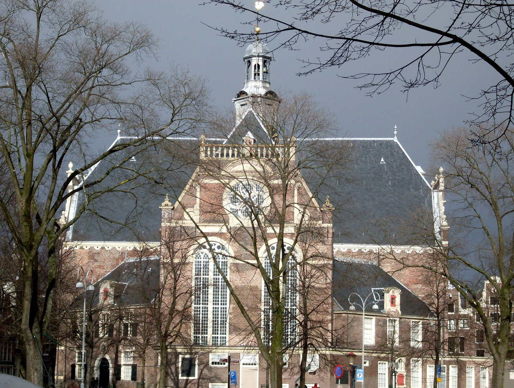
Построена в стиле голландского барокко. Имеет уникальную форму купола, отличающуюся от традиционных форм. Интерьер церкви украшен изысканными резными элементами. Является частью ансамбля исторической застройки района Де-Воорхоф. Внутри церкви сохранились старинные орган и алтарная картина.
Церковь Ньивекерк (Noorderkerk), построенная в XVII веке, является одной из старейших протестантских церквей Амстердама. В течение нескольких столетий она служила местом богослужений и важным культурным центром города. Среди запоминающихся фактов стоит отметить её архитектурную уникальность: церковь отличается необычной формой купола и изящной отделкой интерьеров. Церковь привлекает туристов своей историей и архитектурой, а также служит символом религиозной жизни Амстердама.
Amsterdam Oude Kerk
Стиль: готический зал-храм с деревянной крышей
Это самая старая церковь Амстердама. Здание сохранило оригинальные деревянные своды. В церкви проводятся концерты органной музыки. Рядом расположен музей восковых фигур Madame Tussauds Amsterdam. Архитектурный стиль сочетает черты средневекового храма и готической архитектуры.
Оуедеркерк — старейшая церковь Амстердама, построенная ещё в XIII веке в форме средневекового зала-храма. Со временем здание дополнили готическими элементами, придавшими ей характерный облик. Это одна из немногих церквей города, сохранивших оригинальную деревянную кровельную конструкцию. Церковь привлекает туристов своей атмосферой старины и уникальной архитектурой, сочетающей элементы средневековья и готики.
Amsterdam Portuguese Synagogue
Стиль: голландский ренессанс и барокко | Период: 1671–1675
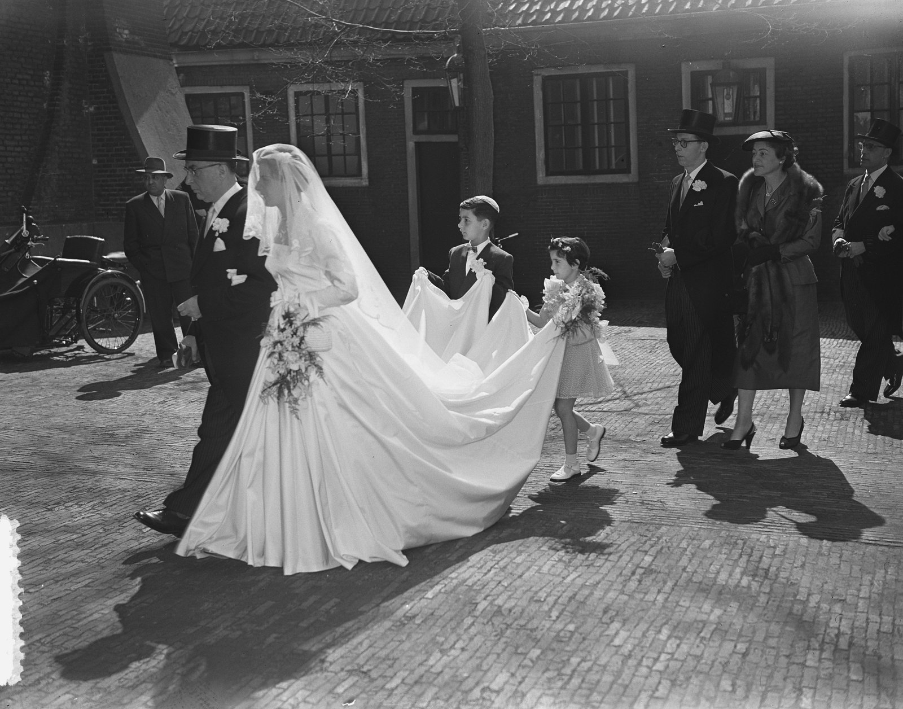
Здание построено в стиле голландского ренессанса и барокко. Архитектором стал Питер Пост, известный также постройкой здания биржи Амстердама. Синагогу посещают ежегодно около 40 тысяч человек. Интерьер украшен резными деревянными элементами и витражами. Вход бесплатный, однако посещение возможно только по предварительной записи.
Португальская синагога Амстердама была построена в XVII веке еврейской общиной португальского происхождения после переселения в Нидерланды. Это одна из старейших действующих синагог Европы, сохранившаяся до наших дней. Здание стало символом культурного наследия иудаизма и еврейской общины Нидерландов. Синагога привлекает туристов своей уникальной архитектурой и богатой историей, отражающей культурное разнообразие Амстердама.
Amsterdam Reguliersgracht
Стиль: канальный дом с арочными мостами
Через Регулярисграхт перекинуто три элегантных арочных моста, выполненных в стиле канальных домов. Мосты Регулярисграхта входят в состав ансамбля знаменитых амстердамских каналов, признанных объектом Всемирного наследия ЮНЕСКО. Каналы Регулярисграхт были построены одновременно с другими каналами кольцевой системы города в XVII веке. Арочные мосты Регулярисграхта выполнены из кирпича и камня, типичны для голландской архитектурной традиции. На мостах Регулярисграхта часто устраиваются уличные выставки и концерты, привлекающие туристов.
Регулярисграхт — один из каналов Амстердама, построенный в XVII веке во время расширения кольцевого канала города. Канал соединяет районы Йордан и Лейдсеплейн и является частью знаменитого амстердамского Грахтенгольда. Через Регулярисграхт перекинуто несколько изящных арочных мостов, украшающих канал и придающих городу особый шарм. Мосты Регулярисграхта — важный элемент городской архитектуры и неотъемлемая часть прогулочного маршрута по историческому центру Амстердама.
Amsterdam Rembrandt House
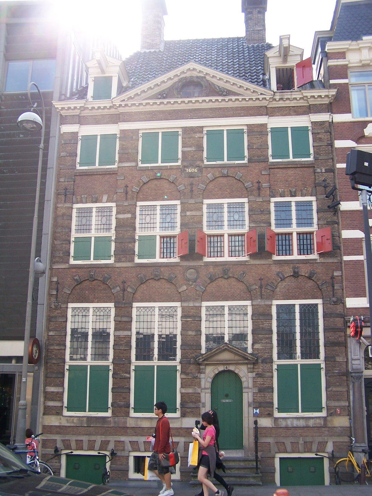
Дом был приобретён художником в 1639 году. Здесь сохранились оригинальные интерьеры XVII века. На первом этаже расположены экспозиции, посвящённые творчеству Рембрандта. В музее также представлены личные вещи художника и членов его семьи. Посещение музея даёт возможность увидеть подлинную обстановку дома, где творил один из величайших художников Европы.
Рембрандт Хаус Музей расположен в историческом доме, где великий голландский художник Рембрандт ван Рейн жил и работал с 1639 по 1660 год. Дом был построен в XVII веке и сохранил интерьеры той эпохи, включая мастерскую художника, жилые комнаты и библиотеку. Это место стало символом творчества и жизни одного из величайших живописцев мира. Музей позволяет посетителям погрузиться в атмосферу мастерской великого мастера и увидеть предметы, принадлежавшие самому художнику, его семье и современникам.
Amsterdam Rijksmuseum
Коллекция музея включает около миллиона экспонатов. Наибольшее внимание привлекают картины Рембрандта, Яна Вермеера и Франса Халса. Архитектура здания сочетает элементы неоготики и ренессансного стиля. Зал современного искусства занимает современное атриумное пространство. Ежегодно музей посещают свыше двух миллионов человек.
Рижский музей (Rijksmuseum) — один из крупнейших художественных музеев Нидерландов, расположенный в Амстердаме по адресу Музейстрат, дом 1. Основан в 1885 году архитектором Питом Куипером в стиле голландского неоренессанса. После масштабной реставрации был вновь открыт в 2013 году. Музей привлекает туристов и ценителей искусства благодаря уникальной коллекции произведений живописи, графики, декоративно-прикладного искусства и мебели эпохи Возрождения и Нового времени.
Amsterdam Concertgebouw
Стиль: эклектика | Период: 1888
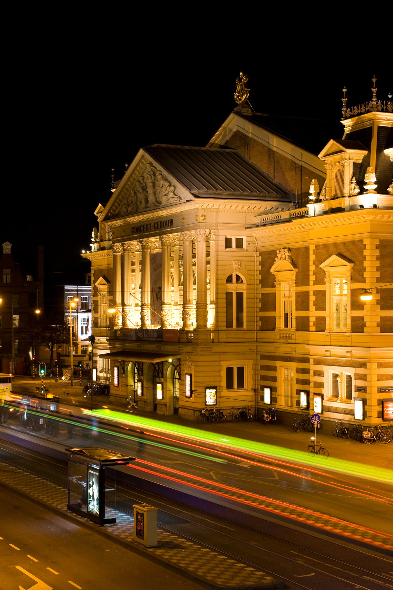
Первый концерт состоялся уже через год после открытия, в сентябре 1889 года. Архитектурный стиль здания — эклектика, сочетающая элементы классицизма и ренессанса. Концертгебау стал первым зданием в мире, специально построенным исключительно для исполнения симфонической музыки. Фасад здания украшен скульптурой Девы Марии работы французского скульптора Шарля Этьена Рошфора. Сцена зала оборудована уникальной системой акустики, разработанной инженером Гроотендорстом.
Концертный зал Концертгебау («Музыкальный дом») был открыт в Амстердаме в 1888 году архитектором Пита Хюмансом. Здание стало символом музыкальной культуры Нидерландов благодаря уникальным акустическим характеристикам и выдающимся концертам классической музыки. Зал неоднократно реконструировался, последняя крупная реконструкция завершилась в 2019 году. Зал Концертгебау является одним из ведущих музыкальных площадок Европы, где регулярно выступают всемирно известные оркестры и солисты.
Amsterdam Royal Palace
Стиль: Датский классицизм (архитектор Якоб ван Кампен)
Строительство здания началось в 1648 году, однако закончено оно было уже после смерти архитектора ван Кампенна в 1655 году. До официального использования королями здание служило ратушей Амстердама. Архитектурный стиль дворца сочетает элементы голландского барокко и классицизма. На территории комплекса расположены Королевские сады, где регулярно проводятся выставки и мероприятия. Во дворце хранится коллекция картин известных нидерландских художников.
Роял-палас Амстердама расположен на Дамской площади и является одной из главных достопримечательностей города. Здание изначально было построено в стиле голландского классицизма архитектором Якобом ван Кампеном в 1655 году как городской ратуша. В дальнейшем здание использовалось королевской семьей Нидерландов начиная с 1808 года, когда оно стало официальной резиденцией монархии. Сегодня Роял-палас служит местом проведения государственных мероприятий и церемоний, а также открыт для посещения туристами. Здание привлекает туристов своей уникальной архитектурой и богатой историей, связанной с развитием политической системы Нидерландов.
Amsterdam Bloemenmarkt
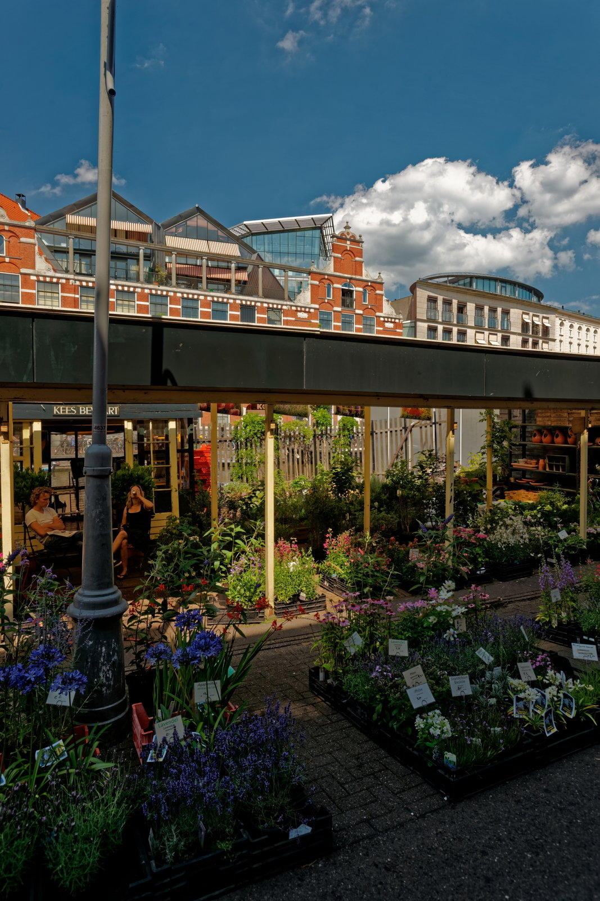
На рынке представлено огромное разнообразие сортов цветов и растений. Ежедневно сюда приезжают фермеры и садоводы из разных регионов Нидерландов. Рынок работает ежедневно, кроме понедельника. Тюльпаны считаются визитной карточкой рынка и страны. Сингель цветочный рынок входит в список объектов культурного наследия Нидерландов.
Сингель цветочный рынок расположен вдоль канала Сингел в Амстердаме и является одним из старейших цветочных рынков города. Здесь традиционно собираются торговцы цветами и растениями начиная с XVII века, когда Нидерланды были мировым лидером в выращивании тюльпанов и других декоративных растений. Рынок стал символом голландской торговли и культуры цветоводства. Знаменитый цветочный рынок привлекает туристов своей атмосферой и возможностью приобрести свежие цветы и растения прямо от производителей.
Amsterdam Stedelijk
Стиль: Neo-Renaissance hall, современное крыло выполнено в форме 'ванной' ('bathtub')
Открытие музея состоялось в 1895 году. В музее представлены работы известных художников, включая Пита Мондриана и Виллема де Кунинга. Новое крыло музея было открыто в 2012 году архитектором Ремом Колхасом. Коллекция включает произведения искусства, археологические артефакты и предметы декоративно-прикладного искусства. Музей расположен на Музейной площади Амстердама.
Музей был основан в 1895 году как частное собрание произведений искусства и археологических находок. Со временем коллекция значительно расширилась, став одним из крупнейших музеев Нидерландов. В новом крыле музея, открытом в 2012 году, применены современные архитектурные решения, гармонично сочетающиеся с историческим зданием в стиле неоренессанс. Это ведущий музей современного искусства в Нидерландах, предлагающий посетителям уникальные выставки и коллекции, отражающие развитие мировой культуры от начала XX века до наших дней.
Amsterdam Van Gogh Museum
Коллекция музея включает около двух тысяч картин Ван Гога, а также работы Анри де Тулуз-Лотрека, Поля Гогена и Клода Моне. В музее регулярно проводятся временные выставки современного искусства. Архитектура здания отличается современным стилем, сочетающим минимализм и функциональность. Ежегодно музей посещает свыше миллиона человек. Рядом с музеем расположены другие важные достопримечательности Амстердама, такие как Королевский дворец и Национальная галерея.
Музей Ван Гога открылся в Амстердаме в 1973 году по проекту архитекторов Ритвелда и ван Трича. Со временем музей расширялся: в 1999 году был добавлен новый крылец, спроектированный японским архитектором Кэндзо Тангэ. Сегодня музей занимает центральную площадь Музейплейн и является одним из главных культурных центров города. Знаменитый музей привлекает туристов и ценителей искусства благодаря уникальной коллекции работ Винсента Ван Гога и произведений других выдающихся художников постимпрессионизма.
Amsterdam Westerkerk
Период: 1620–1631
Это первая крупная протестантская церковь Амстердама после отмены запрета католической архитектуры. Архитектор церкви — Питер Пост, один из выдающихся мастеров своего времени. Храм знаменит своими высокими стрельчатыми окнами и массивной башней. Вестеркерк является ярким примером голландского ренессансного стиля. На протяжении веков здание неоднократно реставрировалось и модернизировалось.
Знаменитый протестантский храм Вестеркерк был построен в Амстердаме в период с 1620 по 1631 год в стиле нидерландского ренессанса. В архитектуре здания гармонично сочетаются элементы поздней готики и раннего барокко. Вестеркерк стал первым крупным зданием города, построенным после отмены запрета католической архитектуры в XVII веке. Храм играл важную роль в жизни амстердамской общины, став местом проведения значимых религиозных мероприятий и торжественных церемоний. Вестеркерк привлекает туристов своей уникальной архитектурой и историческим значением, отражающим культурное развитие Нидерландов периода Нидерландской революции.
Amsterdam Zuiderkerk
Стиль: голландский ренессанс и барокко | Период: 1641–1647 годы
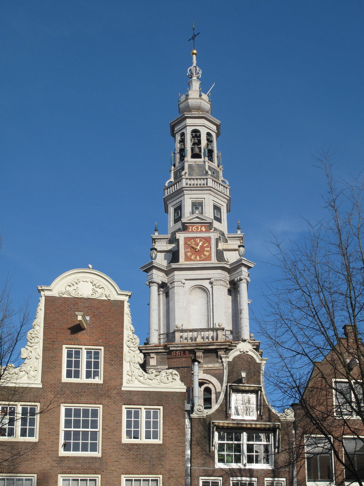
Здание церкви было возведено в 1641–1647 годах. Архитектурный стиль сочетает элементы ренессанса и барокко. Церковь известна своим богатым интерьером и лепниной. На территории расположена старинная колокольня. Рядом находится музей восковых фигур Ван Гога.
Церковь Зуидеркерк (Зуидеркирхе) была построена в XVII веке в Амстердаме и стала одной из первых протестантских церквей города после Реформации. Сооружение выполнено в стиле голландского ренессанса и барокко, отличается изящной архитектурой и богатым декором. В течение нескольких столетий церковь играла важную роль в жизни амстердамской общины, служила местом богослужений и памятных событий. Посещение церкви позволяет познакомиться с историей раннего протестантизма в Нидерландах и оценить архитектурное наследие эпохи Возрождения.